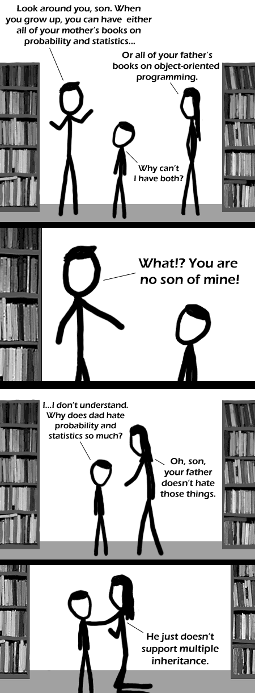

Comic JK 311
When I Feel Like It
⇤
<
?
>
⇥

⇤
<
?
>
⇥
Forum
.
RSS
.
Digg
.
Facebook
.
Reddit
.
Twitter
.
Stumbleupon
Enter your thoughts on number 311 here. Please, no spamming, trolling, or phreaking. Definitely statistics and probabiliy, I mean seriously, who needs (to "learn") OO? The pun comics keep going, but at least this one was rather clever >seconded >I rather like the pun comics, except that re-used complex plane joke.--Treitmaniac. nice one :) We could use a blender to mix him in. >But if he's in ruby, he could mixin a few of the statistic books... argh ... His father should change to a language that supports multiple inheritance. -+-+- There was once a Javanese fisherman, and one day when he was fishing he saw a mermaid and fell in love. So, naturally he tries to be with her, but it turns out that she was married and actually a merwife. Her husband chlleneges the fisherman to a duel, which he accepts. But since he couldn't breathe underwater he drowned and died. Back in Java, the fisherman's son tries to reclaim his inheritance, but is refused. "Why?" he asks, and the response is: "Java doesn't support duel inheritance." -+-+- Multiple inheritence is pure evil. >Why so? Sure it's more complicated, and really not nessarcery, but evil? >>This is the same argument that people use against eval() >>>Nothing is inherently evil. It's how its used and in what spirit. However, few have managed to wield the power of muiltiple inheritance without falling to the dark side. >>>>Indeed. Much like the dreaded goto command and derivatives thereof. >>>>>Goto is awesome. Dijkstra was a dijick... >>>>>>He was a dike? >>>>>>>He was a diek? It doesn't seem so bad in this case -- After all, if you ever get a diamond problem you have something much bigger to worry about. For some reason, some of the stick figures usually look like hitler to me on the first glance.